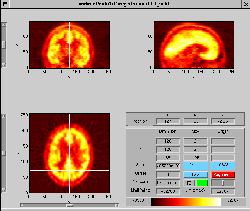
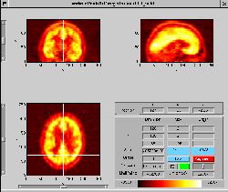

Next: Coarse Prealignment
Up: IPS - Interactive Point
Previous: IPS - Interactive Point
On startup of the IPS registration module, four windows appear.
- A main control window.
- A point list window
- A 3-pane viewer for the standard dataset
- A 3-pane viewer for the reslice dataset
The two former windows are depicted in Figure
1, and the two latter in Figure 2.
Figure 1:
Main control window and point list of IPS
|
|
Figure 2:
3-pane windows for standard and reslice images.
|
|
If transformation parameters have previously been defined in the main
MARS interface, the user is offered to use these for 'Coarse
Prealignment' of the reslice dataset.
Claus Svarer
2004-07-23
![\includegraphics[width=0.45\textwidth]{images/ips_slice3_std.ps}](img3.png) 
